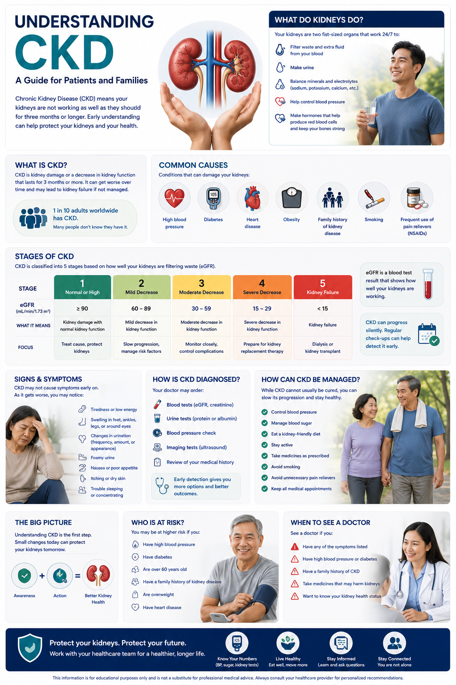

What is Chronic Kidney Disease?Ano ang Talamak na Sakit sa Bato?Unsa ang Kronikal nga Sakit sa Kidney?

CKD is a spectrum — progression between stages can be slowed significantly with early treatment. Many patients remain at Stage 2–3 for decades with proper management.Ang CKD ay isang spectrum — ang pag-unlad sa pagitan ng mga yugto ay maaaring mapabagal nang malaki sa pamamagitan ng maagang paggamot. Maraming pasyente ang nananatili sa Stage 2–3 sa loob ng maraming dekada na may wastong pamamahala.Ang CKD usa ka spectrum — ang pag-uswag tali sa mga yugto mahimong mapabagal pag-ayo pinaagi sa sayo nga pagtambal. Daghang mga pasyente nagpabilin sa Stage 2–3 sulod sa daghang dekada nga adunay hustong pamamala.
Your kidneys filter 200 liters of blood every day — removing waste, regulating blood pressure, balancing electrolytes, and producing hormones that control red blood cell production and bone health. CKD means this filtering capacity is gradually, and sometimes silently, declining.Sinasala ng inyong mga bato ang 200 litro ng dugo bawat araw — inaalis ang basura, kinokontrol ang presyon ng dugo, pinananatiling balanse ang mga electrolyte, at gumagawa ng mga hormone na kumokontrol sa produksyon ng pulang selula ng dugo at kalusugan ng buto. Ang CKD ay nangangahulugang ang kakayahang ito sa pagsala ay unti-unti, at minsan ay tahimik, bumababa.Ang inyong mga kidney nagsala sa 200 litro nga dugo matag adlaw — nagkuha sa basura, nagkontrol sa presyon sa dugo, nagbalanse sa mga electrolyte, ug nagbuhat sa mga hormone nga nagkontrol sa produksyon sa pulang selula sa dugo ug kahimsog sa bukog. Ang CKD nagpasabut nga kini nga kakayahan sa pagsala hinay-hinay, ug usahay hilom, nagkunhod.
CKD is defined as kidney damage or reduced kidney function lasting three months or more. It is diagnosed through blood tests, urine tests, and imaging — not just how you feel. Many people with early CKD feel completely normal.Ang CKD ay tinukoy bilang pinsala sa bato o nabawasang paggana ng bato na tumatagal nang tatlong buwan o higit pa. Ito ay nasusuri sa pamamagitan ng mga pagsusuri sa dugo, ihi, at imaging — hindi lamang kung paano kayo nararamdaman. Maraming tao na may maagang CKD ang nakakaramdam ng ganap na normal.Ang CKD gihubit ingon kadaot sa kidney o nabawasan nga pagtrabaho sa kidney nga molungtad tulo ka bulan o labaw pa. Kini nasusuri pinaagi sa mga pagsusuri sa dugo, ihi, ug imaging — dili lang kung unsay gibati ninyo. Daghang tawo nga adunay sayo nga CKD nakaramdam nga hingpit nga normal.
The key measure is your eGFR (estimated Glomerular Filtration Rate) — think of it as a percentage of your kidney's filtering capacity. A healthy eGFR is above 90. CKD progresses through 5 stages based on this number.Ang pangunahing sukatan ay ang inyong eGFR (estimated Glomerular Filtration Rate) — isipin ito bilang porsyento ng kakayahan ng inyong bato sa pagsala. Ang malusog na eGFR ay nasa itaas ng 90. Ang CKD ay umuusad sa 5 yugto batay sa bilang na ito.Ang susi nga sukatan mao ang inyong eGFR (estimated Glomerular Filtration Rate) — hunahunaa kini ingon porsyento sa kakayahan sa pagsala sa inyong kidney. Ang maayong eGFR labaw sa 90. Ang CKD nag-uswag sa 5 ka yugto base sa numero nga kini.
Why "chronic"?Bakit "talamak"?Ngano "kronikal"?
Unlike acute kidney injury — which can recover — CKD represents structural changes to the kidney that are largely irreversible. The goal is to slow progression, not reverse it.Hindi tulad ng acute kidney injury — na maaaring gumaling — ang CKD ay kumakatawan sa mga istrukturang pagbabago sa bato na halos hindi na mababago. Ang layunin ay pabagalin ang pag-unlad, hindi baligtarin ito.Dili sama sa acute kidney injury — nga mahimong maulian — ang CKD nagrepresentar sa mga istrukturang pagbabago sa kidney nga halos dili na mababago. Ang tumong mao ang pagpabagal sa pag-uswag, dili ang pag-undo niini.
How common is it?Gaano ito karaniwan?Unsa ka sagad kini?
Approximately 1 in 10 Filipinos has CKD. Most cases are driven by diabetes and hypertension — both of which damage the delicate filtering units (glomeruli) over time.Humigit-kumulang 1 sa bawat 10 na Pilipino ay may CKD. Karamihan sa mga kaso ay dulot ng diabetes at hypertension — parehong nagpapasama sa mga maselang yunit ng pagsala (glomeruli) sa paglipas ng panahon.Mga 1 sa 10 ka Pilipino adunay CKD. Kadaghanan sa mga kaso gidala sa diabetes ug hypertension — pareho nagdaot sa mga malumo nga yunit sa pagsala (glomeruli) sa paglabay sa panahon.
The kidney-heart connectionAng ugnayan ng bato at pusoAng koneksyon sa kidney ug puso
Kidney disease and heart disease are deeply linked. Damaged kidneys raise blood pressure, worsen anemia, and promote inflammation — all of which strain the heart. This is why your nephrologist pays close attention to your blood pressure, cholesterol, and heart health simultaneously.Ang sakit sa bato at sakit sa puso ay malalim na magkaugnay. Ang nasirang bato ay nagpapataas ng presyon ng dugo, nagpapalala ng anemia, at nagtataguyod ng pamamaga — lahat ng ito ay nagpapabigat sa puso. Kaya naman ang inyong nephrologist ay nagbibigay ng malapit na pansin sa inyong presyon ng dugo, kolesterol, at kalusugan ng puso nang sabay-sabay.Ang sakit sa kidney ug sakit sa puso lawom nga magkaugnay. Ang nadaot nga kidney nagpataas sa presyon sa dugo, nagpagrabe sa anemia, ug nagpalambo sa implamasyon — tanan niini nagpasakit sa puso. Mao kini ang hinungdan nga ang inyong nephrologist naghatag ug duol nga pagtagad sa inyong presyon sa dugo, kolesterol, ug kahimsog sa puso sabay-sabay.
The 5 Stages of CKDAng 5 Yugto ng CKDAng 5 ka Yugto sa CKD
CKD is classified by eGFR (mL/min/1.73m²) and albuminuria (protein in urine). Knowing your stage helps guide how often you need labs, what treatments apply, and when referral to a specialist is needed.Ang CKD ay inuri ayon sa eGFR (mL/min/1.73m²) at albuminuria (protina sa ihi). Ang pagkaalam ng inyong yugto ay tumutulong na gabayan kung gaano kadalas kailangan ng mga pagsusuri, kung anong mga paggamot ang naaangkop, at kung kailan kailangan ang referral sa espesyalista.Ang CKD giurong ayon sa eGFR (mL/min/1.73m²) ug albuminuria (protina sa ihi). Ang pagkahibalo sa inyong yugto nagtabang sa paggiya kung unsa kadalas kinahanglan ang mga pagsusuri, kung unsang mga pagtambal ang angay, ug kung kanus-a kinahanglan ang referral sa espesyalista.
Proteinuria matters independently of eGFRAng proteinuria ay mahalaga nang hiwalay sa eGFRAng proteinuria importante nga lahi sa eGFR
The amount of protein in your urine (albuminuria) is a powerful predictor of kidney decline — separate from your eGFR. Even with a normal eGFR, significant proteinuria requires treatment. Your doctor uses both together to guide your care plan.Ang dami ng protina sa inyong ihi (albuminuria) ay isang malakas na tagahula ng pagbaba ng bato — hiwalay sa inyong eGFR. Kahit may normal na eGFR, ang makabuluhang proteinuria ay nangangailangan ng paggamot. Ginagamit ng inyong doktor ang dalawa nang magkasama upang gabayan ang inyong plano ng pag-aalaga.Ang gidaghanon sa protina sa inyong ihi (albuminuria) usa ka kusganong tigpanagna sa pagkunhod sa kidney — lahi sa inyong eGFR. Bisan adunay normal nga eGFR, ang makasaysayanong proteinuria nagkinahanglan ug pagtambal. Gigamit sa inyong doktor ang duha nga magkauban aron gabayan ang inyong plano sa pag-atiman.
eGFR Calculator — CKD-EPI 2021 eGFR Calculator — CKD-EPI 2021 eGFR Calculator — CKD-EPI 2021 eGFR Calculator — CKD-EPI 2021
Enter your most recent serum creatinine result to estimate your kidney function. This calculator uses the CKD-EPI 2021 equation — the current international standard recommended by KDIGO, race-free and validated for Filipino patients. Ilagay ang inyong pinakabagong resulta ng serum creatinine upang matantya ang inyong pag-andar ng bato. Ginagamit ng calculator na ito ang CKD-EPI 2021 equation — ang kasalukuyang internasyonal na pamantayan na inirerekomenda ng KDIGO, walang lahi at napatunayan para sa mga pasyenteng Filipino. Isulod ang imong pinakabag-o nga resulta sa serum creatinine aron matantya ang imong pag-andar sa kidney. Kining calculator naggamit sa CKD-EPI 2021 equation — ang kasamtangan nga internasyonal nga pamantayan nga girekomenda sa KDIGO, race-free ug napatunayang angay alang sa mga pasyente nga Filipino. Ilagyan mu ing pinakabayu mong resulta ning serum creatinine para matuklas ing tungkul ning kidney mu. Gagamitan ning calculator ini ing CKD-EPI 2021 equation — ing kasalukuyung internasyonal na pamantayan a inirekomenda ng KDIGO, walang lahi at napatunayang angkop para king mga pasyenteng Filipino.
⚕ This calculator is for educational purposes only. eGFR alone does not determine your CKD stage — your doctor also considers proteinuria, blood pressure, and clinical history. Always discuss your results with your nephrologist. ⚕ Ang calculator na ito ay para sa layuning pang-edukasyon lamang. Ang eGFR lamang ay hindi nagtatakda ng inyong yugto ng CKD — isinasaalang-alang din ng inyong doktor ang proteinuria, presyon ng dugo, at kasaysayang klinikal. Laging talakayin ang inyong mga resulta sa inyong nephrologist. ⚕ Kining calculator alang sa layunin sa edukasyon lamang. Ang eGFR lamang dili nagtakda sa imong yugto sa CKD — gikonsiderar usab sa imong doktor ang proteinuria, presyon sa dugo, ug klinikal nga kasaysayan. Kanunay hisguti ang imong mga resulta uban sa imong nephrologist. ⚕ Ing calculator ini para king layunin sa edukasyon yang kahalaga. Ing eGFR kapwa ali nagtutuklas king yugto mu sa CKD — ikonsiderar ya naman ning doktor mu ing proteinuria, presyon ning dugu, at klinikal na kasaysayan. Lagi yang pag-usapan ing resulta mu kang nephrologist mu.
What Causes CKD?Ano ang Nagdudulot ng CKD?Unsa ang Naghimong CKD?
In the Philippines, the overwhelming majority of CKD cases stem from two preventable, treatable conditions. Understanding the cause of your CKD is essential — because different causes require different treatments.Sa Pilipinas, ang napakaraming kaso ng CKD ay nagmumula sa dalawang kondisyong maaaring maiwasan at magamot. Ang pag-unawa sa sanhi ng inyong CKD ay mahalaga — dahil ang iba't ibang sanhi ay nangangailangan ng iba't ibang paggamot.Sa Pilipinas, ang kadaghanan sa mga kaso sa CKD nagagikan sa duha ka kondisyon nga mapugngan ug matambal. Ang pagsabut sa hinungdan sa inyong CKD mahalaga — tungod ang lain-laing hinungdan nagkinahanglan ug lain-laing pagtambal.
Diabetic kidney diseaseSakit sa bato dulot ng diabetesSakit sa kidney tungod sa diabetes
Chronically elevated blood sugar damages the glomerular filtration membrane. High glucose causes thickening of basement membranes and eventually scarring (diabetic nephropathy). It is the #1 cause of kidney failure in the Philippines.Ang talamak na mataas na asukal sa dugo ay nagpapasama sa glomerular filtration membrane. Ang mataas na glucose ay nagdudulot ng pagkakapal ng mga basement membrane at sa huli ay pagkabulok (diabetic nephropathy). Ito ang #1 na sanhi ng pagpalya ng bato sa Pilipinas.Ang talamak nga taas nga asukal sa dugo nagdaot sa glomerular filtration membrane. Ang taas nga glucose nagdala sa pagkakapal sa mga basement membrane ug sa katapusan pagkabangkag (diabetic nephropathy). Kini ang #1 nga hinungdan sa pagpalya sa kidney sa Pilipinas.
Hypertensive nephrosclerosisHypertensive nephrosclerosisHypertensive nephrosclerosis
Uncontrolled high blood pressure damages kidney arterioles — the tiny vessels that feed each glomerulus. Over years, this causes ischemic scarring and progressive loss of nephrons (the filtering units).Ang hindi kontroladong mataas na presyon ng dugo ay nagpapasama sa mga arteriole ng bato — ang maliliit na daluyan na nagpapakain sa bawat glomerulus. Sa loob ng mga taon, nagdudulot ito ng ischemic scarring at progresibong pagkawala ng mga nephron (ang mga yunit ng pagsala).Ang dili kontrolado nga taas nga presyon sa dugo nagdaot sa mga arteriole sa kidney — ang mga gagmay nga ugat nga nagpakaon sa matag glomerulus. Sulod sa mga tuig, kini nagdala sa ischemic scarring ug progresibong pagkawala sa mga nephron (ang mga yunit sa pagsala).
Other causes include:Kasama sa ibang mga sanhi:Ang uban pang mga hinungdan naglakip sa:
Signs and SymptomsMga Tanda at SintomasMga Timailhan ug Sintomas
CKD is famously "silent" in early stages. Symptoms typically emerge only when eGFR falls below 30 — which is why routine laboratory screening is so important, especially if you have diabetes or hypertension.Ang CKD ay kilala bilang "tahimik" sa mga maagang yugto. Ang mga sintomas ay karaniwang lumalabas lamang kapag bumaba ang eGFR sa ibaba ng 30 — kaya naman napakahalaga ng regular na pagsusuri sa laboratoryo, lalo na kung may diabetes o hypertension kayo.Ang CKD bantog nga "hilom" sa sayo nga mga yugto. Ang mga sintomas kasagaran motungha lamang kung mubaba ang eGFR sa ubos sa 30 — mao kini ang hinungdan nga ang regular nga pagsusuri sa laboratoryo kaayo importante, labi na kung adunay diabetes o hypertension kamo.
Uremia — the end-stage warning signUremia — ang babala sa huling yugtoUremia — ang babala sa katapusang yugto
Uremia refers to the toxic accumulation of waste products when kidneys can no longer excrete them. It causes a syndrome of nausea, confusion, pericarditis (heart sac inflammation), and bleeding. This is a medical emergency requiring immediate evaluation for dialysis initiation.Ang uremia ay tumutukoy sa nakakalason na pagtitipon ng mga basura kapag hindi na maipagawas ng bato. Nagdudulot ito ng sindrome ng pagduduwal, pagkalito, pericarditis (pamamaga ng balat ng puso), at pagdurugo. Ito ay isang medikal na emergency na nangangailangan ng agarang pagsusuri para sa pagsisimula ng dialysis.Ang uremia nagtumong sa nakakalason nga pagtipon sa mga basura kung dili na maipagawas sa kidney. Nagdala kini sa sindrome sa pagdulaw, kalibog, pericarditis (implamasyon sa balat sa puso), ug pagdugo. Kini usa ka medikal nga emergency nga nagkinahanglan ug dinalian nga pagsusuri alang sa pagsugod sa dialysis.
Key Laboratory TargetsMga Pangunahing Target sa LaboratoryoMga Importante nga Target sa Laboratoryo
These are the evidence-based targets your nephrologist aims for at each follow-up visit. Keeping these numbers within range significantly slows CKD progression and reduces complications.Ito ang mga target na nakabatay sa ebidensya na tinatarget ng inyong nephrologist sa bawat follow-up na pagbisita. Ang pagpapanatili ng mga bilang na ito sa loob ng hanay ay makabuluhang nagpapabagal ng pag-unlad ng CKD at nagbabawas ng mga komplikasyon.Kini ang mga target nga nakabase sa ebidensya nga gitarget sa inyong nephrologist sa matag follow-up nga pagbisita. Ang pagpadayon sa mga numero nga kini sa sulod sa hanay makasaysayanon nga nagpabagal sa pag-uswag sa CKD ug nagpababa sa mga komplikasyon.
| ParameterParameterParameter | What it measuresAno ang sinusukat nitoUnsa ang gisukat niini | Target (KDIGO 2024)Target (KDIGO 2024)Target (KDIGO 2024) |
|---|---|---|
| eGFR | Kidney filtering capacityKakayahan ng bato sa pagsalaKakayahan sa kidney sa pagsala | Track trend over timeSubaybayan ang pagbabago sa paglipas ng panahonSubaybayan ang pagbabago sa paglabay sa panahon |
| Urine albumin-creatinine ratio (UACR) | Protein leak; damage markerPagtulo ng protina; tanda ng pinsalaPagtulo sa protina; timailhan sa kadaot | < 30 mg/g (aim to reducelayuning bawasantumong pagkuhusan) |
| Hemoglobin | Anemia of CKDAnemia ng CKDAnemia sa CKD | 100–115 g/L |
| Ferritin / TSAT | Iron stores for erythropoiesisMga imbak ng bakal para sa erythropoiesisMga tipigan sa iron alang sa erythropoiesis | Ferritin >200 / TSAT >30% |
| Parathyroid hormone (iPTH) | Bone-mineral metabolismMetabolismo ng mineral sa butoMetabolismo sa mineral sa bukog | 130–600 pg/mL (dialysis) |
| Phosphorus | Mineral balance; vessel calcification riskBalanse ng mineral; panganib ng calcification ng daluyanBalanse sa mineral; risgo sa calcification sa ugat | 3.5–5.5 mg/dL |
| Calcium | Bone health and cardiac functionKalusugan ng buto at paggana ng pusoKahimsog sa bukog ug pagtrabaho sa puso | 8.4–10.2 mg/dL |
| Potassium | Heart rhythm safetyKaligtasan ng ritmo ng pusoKaluwasan sa ritmo sa puso | 3.5–5.5 mEq/L |
| Bicarbonate | Acid-base balance (metabolic acidosis)Balanse ng acid-base (metabolic acidosis)Balanse sa acid-base (metabolic acidosis) | 22–26 mEq/L |
| Blood pressurePresyon ng dugoPresyon sa dugo | Hypertension controlKontrol ng hypertensionKontrol sa hypertension | < 140/90 mmHg < 130/80 mmHg if diabetes or UACR > 300 mg/g (KDIGO 2024)< 130/80 mmHg kung may diabetes o UACR > 300 mg/g (KDIGO 2024)< 130/80 mmHg kung adunay diabetes o UACR > 300 mg/g (KDIGO 2024) |
| LDL cholesterol | Cardiovascular risk (CKD = very high risk)Cardiovascular risk (CKD = napakataas na panganib)Cardiovascular risk (CKD = labing taas nga risgo) | < 55 mg/dL (ACC/AHA 2026) |
| HbA1c (if diabetickung may diabeteskung adunay diabetes) | Long-term blood sugar controlPangmatagalang kontrol ng asukal sa dugoPangtagal nga kontrol sa asukal sa dugo | 7–8% (individualizedindibidwalisadoindibidwal) |
How CKD is ManagedPaano Pinamamahalaan ang CKDUnsaon Pagdumala sa CKD
CKD management is multifaceted — targeting the underlying cause, protecting residual kidney function, and preventing cardiovascular complications simultaneously. There is no single pill; it is a lifestyle and medication partnership.Ang pamamahala ng CKD ay maraming aspeto — tinatarget ang pinagbabatayan na sanhi, pinoprotektahan ang natitirang paggana ng bato, at pinipigilan ang mga cardiovascular na komplikasyon nang sabay-sabay. Walang isang solong tableta; ito ay isang pakikipagtulungan ng pamumuhay at gamot.Ang pagdumala sa CKD daghan ang aspeto — gitatarget ang nagpapailalom nga hinungdan, ginapanalipdan ang nahabilin nga pagtrabaho sa kidney, ug ginasupak ang mga cardiovascular nga komplikasyon sabay-sabay. Walay usa ka tableta lamang; kini usa ka pakigtambayayong sa lifestyle ug tambal.
Control the primary driverKontrolin ang pangunahing dahilanKontrolon ang nag-unang hinungdan
If the cause is diabetes, tight glucose control (HbA1c 7–8%) is essential. If it's hypertension, blood pressure must reach <140/90 mmHg. ACE inhibitors or ARBs are first-line in both — they reduce intra-glomerular pressure and cut proteinuria directly.Kung ang sanhi ay diabetes, ang mahigpit na kontrol ng glucose (HbA1c 7–8%) ay mahalaga. Kung hypertension, ang presyon ng dugo ay dapat maabot ang <140/90 mmHg. Ang ACE inhibitors o ARBs ay unang linya sa pareho — binabawasan nila ang intra-glomerular na presyon at direktang pinuputol ang proteinuria.Kung ang hinungdan mao ang diabetes, ang higpit nga kontrol sa glucose (HbA1c 7–8%) mahalaga. Kung hypertension, ang presyon sa dugo kinahanglan maabot ang <140/90 mmHg. Ang ACE inhibitors o ARBs unang linya sa pareho — nagpababa sila sa intra-glomerular nga presyon ug direkta nga nagputol sa proteinuria.
SGLT2 inhibitors — a kidney-protective revolutionMga SGLT2 inhibitor — isang rebolusyon sa proteksyon ng batoMga SGLT2 inhibitor — usa ka rebolusyon sa proteksyon sa kidney
Medications like dapagliflozin (Catania/Rhea) now have strong evidence for slowing CKD progression regardless of diabetes status. They reduce intra-glomerular hypertension, decrease proteinuria, and provide cardiovascular protection simultaneously.Ang mga gamot tulad ng dapagliflozin (Catania/Rhea) ay mayroon na ngayong matibay na ebidensya para sa pagpapabagal ng pag-unlad ng CKD anuman ang katayuan ng diabetes. Binabawasan nila ang intra-glomerular hypertension, nagpapababa ng proteinuria, at nagbibigay ng cardiovascular na proteksyon nang sabay-sabay.Ang mga tambal sama sa dapagliflozin (Catania/Rhea) aduna na karon ug kusgan nga ebidensya sa pagpabagal sa pag-uswag sa CKD bisan unsa pa ang kahimtang sa diabetes. Nagpababa sila sa intra-glomerular hypertension, nagpaubos sa proteinuria, ug naghatag sa cardiovascular nga proteksyon sabay-sabay.
Manage CKD complicationsPamahalaan ang mga komplikasyon ng CKDDumalaon ang mga komplikasyon sa CKD
Anemia (erythropoiesis-stimulating agents + iron), bone-mineral disorder (active vitamin D, phosphate binders), metabolic acidosis (sodium bicarbonate), and hyperkalemia all require active, targeted treatment as kidney function declines.Ang anemia (erythropoiesis-stimulating agents + bakal), bone-mineral disorder (active vitamin D, phosphate binders), metabolic acidosis (sodium bicarbonate), at hyperkalemia ay nangangailangan lahat ng aktibo at naka-target na paggamot habang bumababa ang paggana ng bato.Ang anemia (erythropoiesis-stimulating agents + iron), bone-mineral disorder (active vitamin D, phosphate binders), metabolic acidosis (sodium bicarbonate), ug hyperkalemia tanan nagkinahanglan ug aktibo ug naka-target nga pagtambal samtang nagkunhod ang pagtrabaho sa kidney.
Aggressive cardiovascular protectionAgresibong proteksyon sa cardiovascularAgresibo nga proteksyon sa cardiovascular
CKD patients are at very high cardiovascular risk. Statin therapy targeting LDL <55 mg/dL, aspirin where indicated, and smoking cessation are non-negotiable. Your heart and kidneys must be protected together.Ang mga pasyenteng may CKD ay nasa napakataas na cardiovascular risk. Ang statin therapy na tinatarget ang LDL <55 mg/dL, aspirin kung saan ipinahiwatig, at pagtigil sa paninigarilyo ay hindi mapag-uusapan. Ang inyong puso at mga bato ay dapat protektahan nang magkasama.Ang mga pasyente nga adunay CKD anaa sa labing taas nga cardiovascular risk. Ang statin therapy nga gitarget ang LDL <55 mg/dL, aspirin kung gikinahanglan, ug paghunong sa pagpanigarilyo dili mapag-usapan. Ang inyong puso ug mga kidney kinahanglan panalipdan nga magkauban.
Prepare for renal replacement therapy (Stage 4–5)Maghanda para sa renal replacement therapy (Stage 4–5)Mangandam alang sa renal replacement therapy (Stage 4–5)
Planning for dialysis or kidney transplant should begin at Stage 4. This includes AV fistula creation (for hemodialysis), vaccination completion (Hepatitis B double-dose, pneumococcal, flu), and transplant workup if appropriate.Ang pagpaplano para sa dialysis o kidney transplant ay dapat magsimula sa Stage 4. Kasama dito ang paglikha ng AV fistula (para sa hemodialysis), pagkumpleto ng bakuna (Hepatitis B double-dose, pneumococcal, flu), at transplant workup kung naaangkop.Ang pagplano alang sa dialysis o kidney transplant kinahanglan magsugod sa Stage 4. Naglakip kini sa pagbuhat sa AV fistula (alang sa hemodialysis), pagkumpleto sa bakuna (Hepatitis B double-dose, pneumococcal, flu), ug transplant workup kung angay.
Nutrition for Kidney HealthNutrisyon para sa Kalusugan ng BatoNutrisyon alang sa Kahimsog sa Kidney
Diet in CKD is highly individualized. What you should or should not eat depends on your stage, your lab values, and whether you are on dialysis. The following are general principles — always confirm specifics with your nephrologist or renal dietitian.Ang diyeta sa CKD ay lubos na indibidwalisado. Ang dapat o hindi dapat kainin ay nakasalalay sa inyong yugto, mga halaga ng laboratoryo, at kung nasa dialysis kayo. Ang sumusunod ay mga pangkalahatang prinsipyo — laging kumpirmahin ang mga partikular na detalye sa inyong nephrologist o renal dietitian.Ang diyeta sa CKD lubos nga indibidwal. Ang angay o dili angay kaonon nagsalig sa inyong yugto, mga kantidad sa laboratoryo, ug kung anaa kamo sa dialysis. Ang musunod mga pangkabiliran nga prinsipyo — kanunay kumpirmahon ang mga detalye sa inyong nephrologist o renal dietitian.
Safe foods for most CKD patientsMga ligtas na pagkain para sa karamihan ng pasyenteng may CKDMga luwas nga pagkaon alang sa kadaghanan sa mga pasyente nga adunay CKD
- White rice, bread, pasta (low potassium/phosphorus)Puting bigas, tinapay, pasta (mababang potassium/phosphorus)Puting bugas, tinapay, pasta (ubos nga potassium/phosphorus)
- Egg whites (high-quality protein, low phosphorus)Puting ng itlog (mataas na kalidad na protina, mababang phosphorus)Puti sa itlog (taas nga kalidad nga protina, ubos nga phosphorus)
- Cabbage, cauliflower, green beans, cucumber (low potassium after leaching)Repolyo, cauliflower, sitaw, pipino (mababang potassium pagkatapos ng leaching)Repolyo, cauliflower, sitaw, pipino (ubos nga potassium human sa leaching)
- Apples, grapes, cranberries, pineappleMansanas, ubas, cranberry, pinyaMansanas, ubas, cranberry, pinya
- Unsalted crackers, corn, rice cakesUnsalted crackers, mais, putoUnsalted crackers, mais, puto
- Poaching or boiling vegetables (reduces potassium by ~50%)Ang pag-poach o pag-boil ng mga gulay (nagpapababa ng potassium ng ~50%)Ang pag-poach o pag-boil sa mga utanon (nagpababa sa potassium ug ~50%)
Warning Signs — Do Not WaitMga Babala — Huwag Mag-antayMga Babala — Ayaw Maghulat
⚠ Go to the Emergency Room or call your doctor immediately if you experience:Pumunta sa Emergency Room o tumawag agad sa inyong doktor kung naranasan ninyo ang:Adto sa Emergency Room o tawagan dayon ang inyong doktor kung nasinati ninyo ang:
Frequently Asked QuestionsMga Madalas na ItanongMga Kasagarang Gipangutana
Will my kidneys get better?Gagaling pa ba ang aking mga bato?Maulian pa ba ang akong mga kidney?
CKD is not curable, but it is manageable. With good control of blood pressure, blood sugar, and proteinuria, many patients remain stable for years or even decades. Progression is not inevitable — it depends heavily on how well the risk factors are managed.Ang CKD ay hindi magagamot, ngunit maaaring pamahalaan. Sa mabuting kontrol ng presyon ng dugo, asukal sa dugo, at proteinuria, maraming pasyente ang nananatiling matatag sa loob ng maraming taon o maging dekada. Ang pag-unlad ay hindi hindi maiiwasan — lubos itong nakasalalay sa kung gaano kahusay pinamamahalaan ang mga risk factor.Ang CKD dili matambal, apan madumala. Sa maayong kontrol sa presyon sa dugo, asukal sa dugo, ug proteinuria, daghang mga pasyente nagpabilin nga stable sulod sa daghang tuig o bisan mga dekada. Ang pag-uswag dili dili malikayan — kini lubos nagsalig kung unsa kahusay ang pagdumala sa mga risk factor.
Should I avoid contrast dye or NSAIDs?Dapat ko bang iwasan ang contrast dye o NSAIDs?Kinahanglan ba nako likayan ang contrast dye o NSAIDs?
Yes. Nonsteroidal anti-inflammatory drugs (ibuprofen, mefenamic acid, naproxen) reduce blood flow to the kidneys and can precipitate acute injury — avoid them unless directed otherwise. Iodinated contrast for CT scans also carries risk; always inform your doctor and radiologist of your CKD diagnosis before any imaging study.Oo. Ang mga nonsteroidal anti-inflammatory na gamot (ibuprofen, mefenamic acid, naproxen) ay nagpapababa ng daloy ng dugo sa mga bato at maaaring magdulot ng acute na pinsala — iwasan ang mga ito maliban kung iba ang tagubilin. Ang iodinated contrast para sa CT scan ay may panganib din; laging ipaalam sa inyong doktor at radiologist ang inyong CKD diagnosis bago ang anumang imaging study.Oo. Ang mga nonsteroidal anti-inflammatory nga tambal (ibuprofen, mefenamic acid, naproxen) nagpababa sa daloy sa dugo ngadto sa mga kidney ug mahimong magdala sa acute nga kadaot — likayan kini gawas kung lain ang gisulti. Ang iodinated contrast alang sa CT scan adunay risgo usab; kanunay ipahibalo sa inyong doktor ug radiologist ang inyong CKD diagnosis bago ang bisan unsang imaging study.
Can I take herbal supplements or alternative medicines?Maaari ba akong uminom ng mga herbal supplement o alternatibong gamot?Mahimo ba akong moinom ug mga herbal supplement o alternatibong tambal?
Many herbal preparations (including common "kidney cleanse" supplements) contain aristolochic acid, heavy metals, or oxalates that are directly nephrotoxic. Please always disclose any supplement, herbal, or traditional medicine you are taking. Some may interfere with medications or worsen kidney function.Maraming herbal na paghahanda (kasama ang mga karaniwang "kidney cleanse" supplement) ay naglalaman ng aristolochic acid, mabibigat na metal, o oxalate na direktang nakakasama sa bato. Mangyaring laging ipaalam ang anumang supplement, herbal, o tradisyonal na gamot na inyong iniinom. Ang ilan ay maaaring makagambala sa mga gamot o magpalala ng paggana ng bato.Daghang herbal nga paghanda (lakip ang kasagarang "kidney cleanse" supplement) naglangkob sa aristolochic acid, bug-at nga metal, o oxalate nga direkta nga nakadaot sa kidney. Palihog kanunay ipahibalo ang bisan unsang supplement, herbal, o tradisyonal nga tambal nga inyong giinom. Ang uban mahimong makaguba sa mga tambal o magpagrabe sa pagtrabaho sa kidney.
How often do I need to see my nephrologist?Gaano kadalas ako dapat makita ng aking nephrologist?Unsa kadalas kinahanglan akong makita sa akong nephrologist?
Frequency depends on your stage and stability. Stage 1–2: every 6–12 months. Stage 3: every 3–6 months. Stage 4–5: every 1–3 months. Your doctor will set the appropriate interval based on your individual trends.Ang dalas ay nakasalalay sa inyong yugto at katatagan. Stage 1–2: bawat 6–12 buwan. Stage 3: bawat 3–6 buwan. Stage 4–5: bawat 1–3 buwan. Itatakda ng inyong doktor ang angkop na agwat batay sa inyong mga indibidwal na pagbabago.Ang kadalasan nagsalig sa inyong yugto ug katatagan. Stage 1–2: matag 6–12 ka bulan. Stage 3: matag 3–6 ka bulan. Stage 4–5: matag 1–3 ka bulan. Ibutang sa inyong doktor ang angay nga agwat base sa inyong indibidwal nga mga pagbabago.

W. G. M. Rivero, MD, FPCP, DPSN
Specialist in Internal Medicine, Nephrology, and Clinical Nutrition.Espesyalista sa Panloob na Medisina, Nefrolohiya, at Klinikal na Nutrisyon.Espesyalista sa Internal nga Medisina, Nefrolohiya, ug Klinikal nga Nutrisyon. Espesyalista king Panloob na Medisina, Nefrolohiya, at Klinikal na Nutrisyon. Practicing integrative and evidence-based nephrology across Quezon City, Pampanga, and Bulacan.
PRC 0105184 · seriousmd.com/doc/williamrivero ·